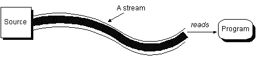
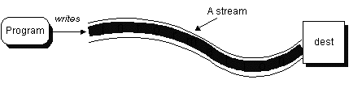
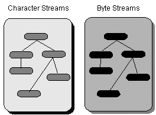
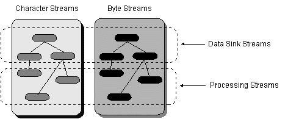

Feedback Form
|
|
Start of Tutorial > Start of Trail |
Search
Feedback Form |
Often programs need to bring in information from an external source or send out information to an external destination. The information can be anywhere: in a file, on disk, somewhere on the network, in memory, or in another program. Also, it can be of any type: objects, characters, images, or sounds.To bring in information, a program opens a stream on an information source (a file, memory, a socket) and reads the information serially, like this:
 Similarly, a program can send information to an external destination by opening a stream to a destination and writing the information out serially, like this: No matter where the information is coming from or going to and no matter what type of data is being read or written, the algorithms for reading and writing data is pretty much always the same.The
Reading Writing open a stream while more information read information close the streamopen a stream while more information write information close the streamjava.iopackage contains a collection of stream classes that support these algorithms for reading and writing. These classes are divided into two class hierarchies based on the data type (either characters or bytes) on which they operate.
 However, it's often more convenient to group the classes based on their purpose rather than on the data type they read and write. Thus, we can cross-group the streams by whether they read from and write to data "sinks" or process the information as its being read or written.
This figure has been reduced to fit on the page.
Click the image to view it at its natural size.
This section describes each type of stream and shows the classes in
java.io
that implement them according to the division in the class hierarchy.
Then, because most people think in terms of what they want to do rather
than what they are doing it to, we provide two sections
that show you how to use selected streams based on their purpose:
Two of the byte streams,ObjectInputStreamandObjectOutputStream, are specialized streams that let you read and write objects. Reading and writing objects is a process known as object serialization. Object serialization has many uses, including remote method invocation (RMI). In addition to the object streams,java.iohas other classes and interfaces that define the API to help classes perform serialization for its instances.
The character and byte streams are all sequential access streams. In contrast,RandomAccessFilelets you randomly access the contents of a file. This section talks about how to use random access files. It also provides a special section that shows you how to write filters for objects that implement theDataInputandDataOutputinterfaces. Filters implemented in this fashion are more flexible than regular filter streams because they can be used on random access files and on some sequential files.
This section
briefly introduces the remaining classes in java.io.
Many of the examples in the next trail, Custom Networkinguse the I/O streams described in this lesson to read from and write to
URLs,URLConnections, andSockets.
Security consideration: Some I/O operations are subject to approval by the current security manager. The example programs contained in these lessons are standalone applications, which by default have no security manager. This code might not work in an applet depending on the in which browser or viewer it is running. See Security Restrictions
[PENDING: explain why integers are used to get results from read methods. fix explanation of piped streams to elaborate how piping works as per this reader's comment:
Also, the program in the following "How to Use Pipe Streams" section is
poorly explained, it seems to me. Only the barest code segment that
involves piping is highlighted, but the implications, if any, of why a
thread (ReverseThread) needs to be called instead of a method, and how
the piping actually works when the sort method and the final reverse
method are called, are all left to the reader (to struggle with).
In the same program, 'wrapped' streams is only superficially pointed
out; obvious issues like: can any stream wrap any other stream, what are
the considerations in wrapping, what streams commonly wrap what other
streams and why, are not covered. Writer fatique seems to be showing.]

|
|
Start of Tutorial > Start of Trail |
Search
Feedback Form |